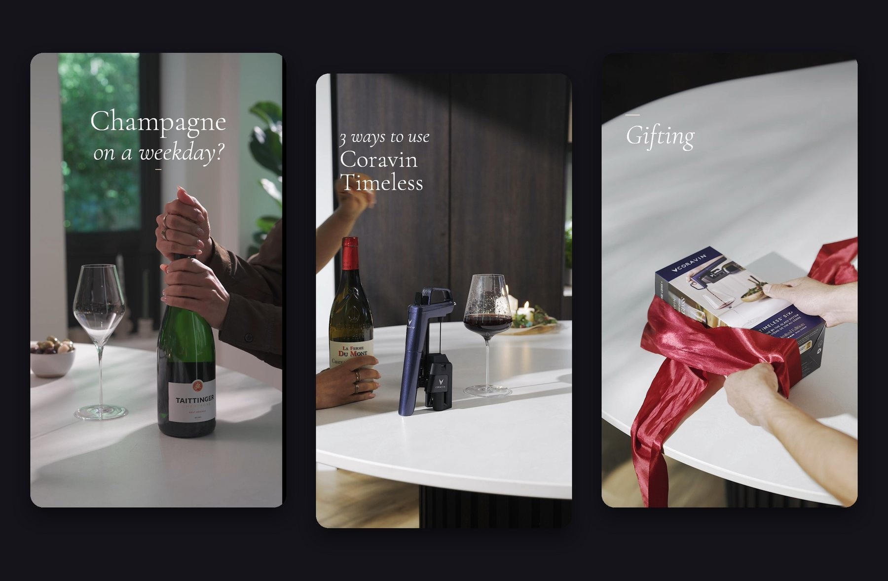
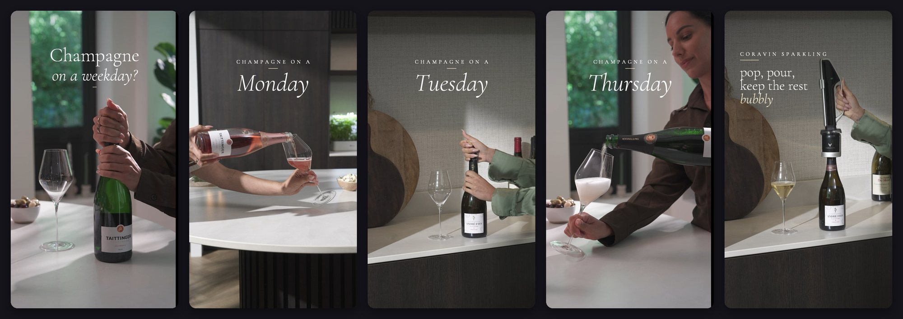
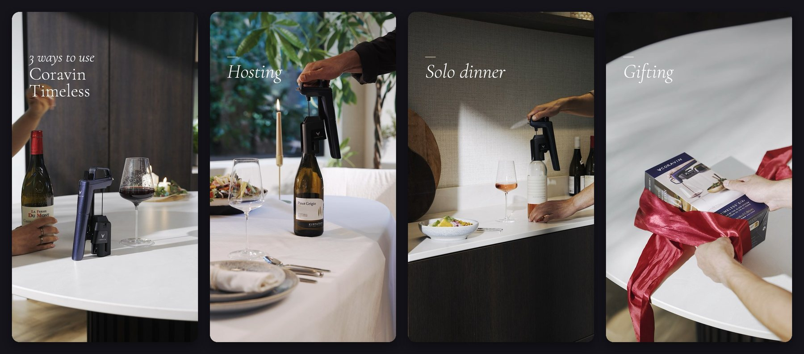

← All projects
Video · Edit & sound
Coravin
Short vertical videos for Coravin's social channels. I edited the footage in Premiere Pro to a brief from Butterfly Studio, adding the title cards, music and sound.

champagne on a weekday?
A week of small pours.
Monday, Tuesday, Thursday: a few ordinary evenings with a bottle of champagne. The title changes with the day, and the closing line, pop, pour, keep the rest bubbly, says what Coravin Sparkling does in one sentence.

3 ways to use coravin timeless
Hosting, solo dinner, gifting.
A second edit shows three moments for Coravin Timeless: hosting, a dinner for one, and giving a bottle as a gift. Each moment gets its own title card.

next up
Projects Amsterdam